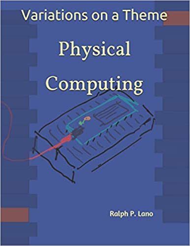

Variations on a Theme:
Physical Computing
by Ralph P. Lano, 1. Edition
For whom
This book is intended for Bachelor students in their first or second semester. It should be used as part of a lecture, since it is probably not suited for self-study. If you are interested to learn about Arduinos and if you would like to understand how to build circuits that work together with those Arduinos, then this book should be useful to you. Very little to no previous knowledge is required.
From whom
Since 2011, I have been Professor of Internet Programming and Multimedia Applications in the MediaEngineering program at the Nuremberg Institute of Technology. From 2003 to 2010 I was Professor of Software Engineering and Multimedia Applications at the University of Applied Sciences Hof, and from 2010 to 2011 Professor of Media and Computing at HTW Berlin. I received my doctorate in 1996 from the University of Iowa on the subject 'Quantum Gravity: Variations on a Theme'. From 1996 to 1997 I was Postdoctoral Research Associate at the Centre for Theoretical Studies of the Indian Institute of Science. From 1997 to 2003 I worked at Pearson Education and later at Siemens AG in software development and project management.
About what
Physical Computing is all around us. Our smartphones, our cars, our washing machines, all are examples of physical computing. Even our toaster has become smart these days. Smart meaning controlled by a microcontroller, and physical computing meaning some electronic components controlled by a microcontroller. If these electronic components are electric motors, magnets or other actuators, then the electronic becomes physical, meaning something moves. But physical also means measuring things like temperature, sound, and light. We want to learn about all these, about electronics, about electronic components, and about microcontrollers.
We start with a little bit of history, not because usually that's what one does, but because many of the concepts and components become really easy to grasp and understand. After having seen some of the origins, we then learn about simple electric circuits and simple electronic components. We get to know batteries, switches, resistors, capacitors and inductors. And we will briefly hear about Ohms law and Kirchhoff's circuit laws. We also get to learn how to use the circuit simulator. Then the active electronic components follow, such as diodes, LEDs, and transistors. We learn about the different type of diodes that there are and what they are used for. We get to know transistors, bipolar and field-effect, and how to use them as switches and as amplifiers. We get to see the multivibrators, especially the astable and the bistable, and learn why they are so important for computers. After these introductory chapters, we have enough of a foundation to do some real physical computing. We will use an Arduino and connect it with the different electronic components we learned about in the previous chapters.
How
does one learn to play the piano? Not by watching or listening. It's the same with everything else: you have to practice a lot! And the more you practice, the better you become at it. That is why, after a brief introduction to the core material we have lab-section, which are all about trying things out, doing experiments. The course as I teach it, consists of three components: the lecture, the labs and assignments. The lecture is two hours per week and corresponds to the first part of each chapter in the book. We complete one chapter in about two to three weeks. In the labs, which also last two hours a week, we then devote ourselves to the experiments. We manage between two or three of the experiments per lab. In the labs, the students work in teams, usually in pairs, to help each other. Before being allowed to take part in the labs, the students have to show that they prepared the labs through their assignments.
Where
can I find the examples? You can find them on the website of the book: www.VariationsOnATheme.eu. Also updates, links to the development environment, and the book in electronic form can be found there. The book in printed form is available on Amazon, in black and white.
May I
use the examples, or copy the book? This material is licensed under Creative Commons Attribution - Non-commercial - Distribution under Equal Terms 4.0 International (CC-BY-NC-SA 4.0). That is, you may reproduce and redistribute the material in any format or medium, remix the material, modify it, and build upon it. However, you must provide appropriate copyright and other proprietary notices, include a link to the license, and indicate whether any changes have been made. This information may be provided in any reasonable manner, but not in such a way as to create the impression that the Licensor is specifically endorsing you or your use. You may not use the material for commercial purposes. And if you remix, modify, or otherwise directly build upon the material, you may distribute your submissions only under the same license as the original, and you may not use any additional clauses or technical procedures that legally prohibit others from doing anything that the license permits. To view a copy of this license, visit http://creativecommons.org/licenses/by-nc-sa/4.0/.
Why
The Physical Computing class consists of a 2h lecture and a 2h lab. Hence we needed to focus on the essentials. There are many books out there, most of them either have to much on electronics, or focus only on the Arduino. I wanted a small book, that has the minimum of what is needed to understand the Arduino cricuits in the last chapter, assuming next to no previous knowledge. And, I wanted the students to record their experiments like it would be done in a real industrial laboratory notebook. I think this is an important lesson.
From where
do the ideas come? I liked the original book by Erik Bartmann quite a bit. But the old version is out of print, and new versions get bigger and bigger. I wanted something smaller. Same is true for the Electronics For Dummies series, which is quite nice. But again, I wanted to really focus on the essentials, leave out anything that is not really needed.
Who helped?
I would like to thank Paul Falstad for the Electronic Circuit Simulator which he graciously put under an opensource license. Without his simulator this book would not exist. I would also like to thank the Wikipedia and its thousands of authors. It makes it so incredibly easy to access and use information. In addition, I would like to thank Johannes Brendel and Daniel Baer for their patience and support during the first iteration of this class. Their invaluable feedback made this project orders of magnitude better, than what it would have been. The book should not, but most likely will contain errors. If you find one, please let me know. Be warned that this is only the second iteration, hence I assume it will contain quite a few inconsistencies. I am not very proud of it, because it was created in a hurry, it had to get out there by October 10th, to be used for the fall term. So it did.
References
[1] Erik Bartmann, Die elektronische Welt mit Arduino entdecken, O'Reilly Verlag, 2011
[2] Electronics All-in-One For Dummies, For Dummies, by Doug Lowe
[3] Arduino Cookbook: Recipes to Begin, Expand, and Enhance Your Projects, O'Reilly, by M. Margolis, B. Jepson, N.R. Weldin
[4] ITP Physical Computing, https://itp.nyu.edu/physcomp/
[5] Elektronik Kompendium, https://www.elektronik-kompendium.de/
.